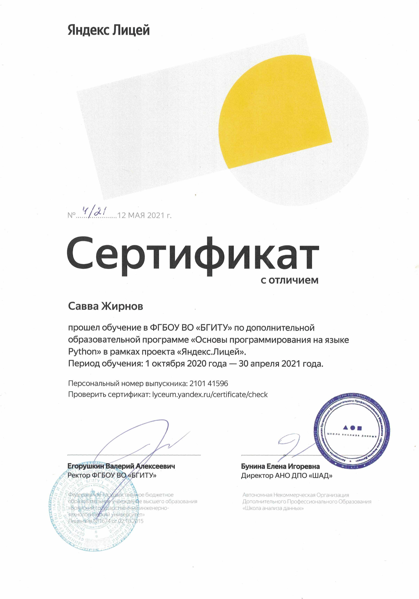
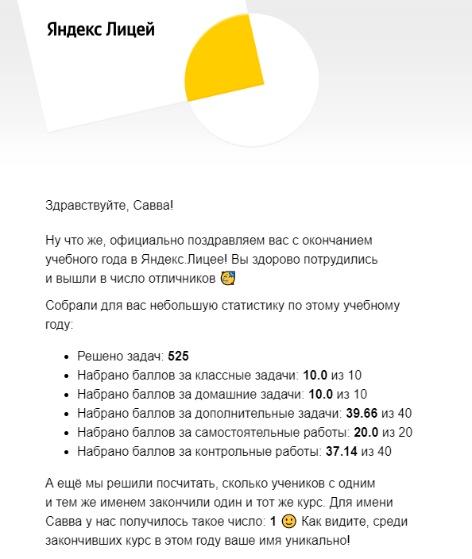

Я — Жирнов Савва, мне 15 лет. Проживаю в городе Брянск. Родился в городе Спрингфилд, штат Массачусетс. В сфере IT уже 3 года, начинал с бесплатных курсов из Интернета, сейчас же хорошо разбираюсь в Python, Unity C#, HTML И CSS и на довольно поверхностном уровне в ряде других языков: Java, JavaScript, C++.
Учусь в МБОУ СОШ № 40 г. Брянска. Являюсь круглым отличником с 1 класса (сейчас в 10). Участвовал в большом количестве олимпиад, как в обычных, так и во всероссийских. Последняя значимая олипмиада — региональный этап по информатике (занял 5 место). Также заканчиваю 3 курс в центре технического образования.
Закончил курсы на платформе Geek Brains: HTML/CSS — получил золотой сертификат и Основы Java — серебряный сертификат. Также есть сертификат с отличием за окончане первого года обучения в Яндекс Лицее (сейчас на втором). Получаю именную муниципаольную стипендию города Брянска.
1. Разработка игр
2. Пиксель артинг
3. Создание видео на ютуб
4. Посещение Яндекс.Лицея
5. Чтение книг о психологии
6. Занятия спортом
7. Работа в фотошопе
8. Медитация
С прошлого года увлекаюсь разработкой игр на Unity. На летних каникулах сделал свою первую полноценную игру, сейчас разрабатывается вторая с учётом всех ошибок и большего опыта. Кстати, персонаж, появляющийся на этом сайте, полностью создан мною.

Ещё 2 года назад начал выпускать видео на свой собственный канал на Youtube. Постепенно совершенствовался в данной сфре, закончилось же это переходом на создание анимаций. Уровень монтажа средний, есть опыт создания сценариев к видео.
Ссылка на гитхаб. Там пока что находится лишь групповой проект по Яндекс.Лицею и старый макет сайта, сохранившийся со времён курсов GeekBrains. Связана такая незаполненность с тем, что я познакомился с Гитом относительно недавно, на курсах Яндекс.Лицея. В будущем планирую сохранять все значимые проекты там.

С Яндекс Лицея началось моё погружение в IT. В первый раз я к сожалению не смог попасть в него, что смотивировало меня самостоятельно проходить курсы. Благодаря этому во второй раз я таки поступил в Яндекс Лицей. Закончил первый год практически полностью на отлично, сейчас учусь на втором в том же темпе.
Стараюсь находить время и на спорт. Летом почти каждый день бегаю по утрам и катаюсь на велосипеде, зимой в свободное время катаюсь на лыжах. Также не забываю про прогулки на свежем воздухе.
Люблю читать книги, из книг по психологии больше всего понравилось: Стивен Бодиан «Медитация для чайников», Мэтью Сайед «Принцип чёрного ящика», Джулия Моргенстерн «Тайм Менеджмент», Михай Чиксентмихайи «Поток». Из других жанров нравится научная фантастика, особенно Лукьяненко.
У меня есть мечта — стать разработчиком. Чего? Пока не знаю, но активно ищу любой творческий путь и стараюсь выложиться там по-максимому. Создание сайтов — прекрасный способ самовыразиться и заработать, и я считаю, что достоин попасть на эти курсы ради получения новых знаний и расширения путей своего самовыражения.